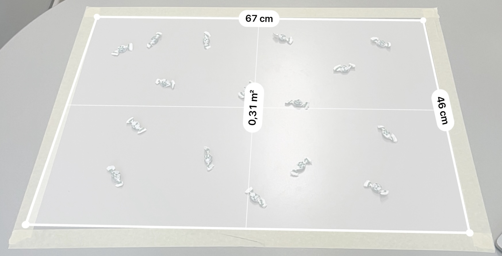
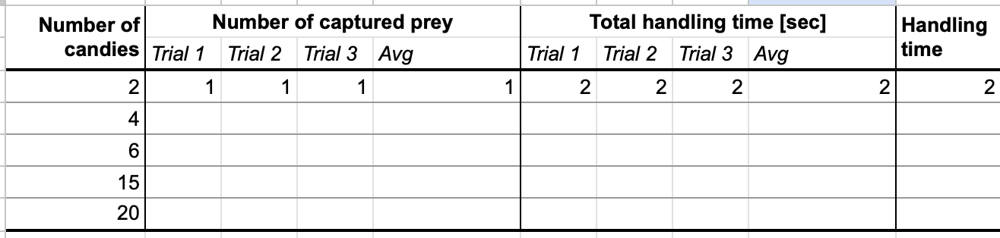
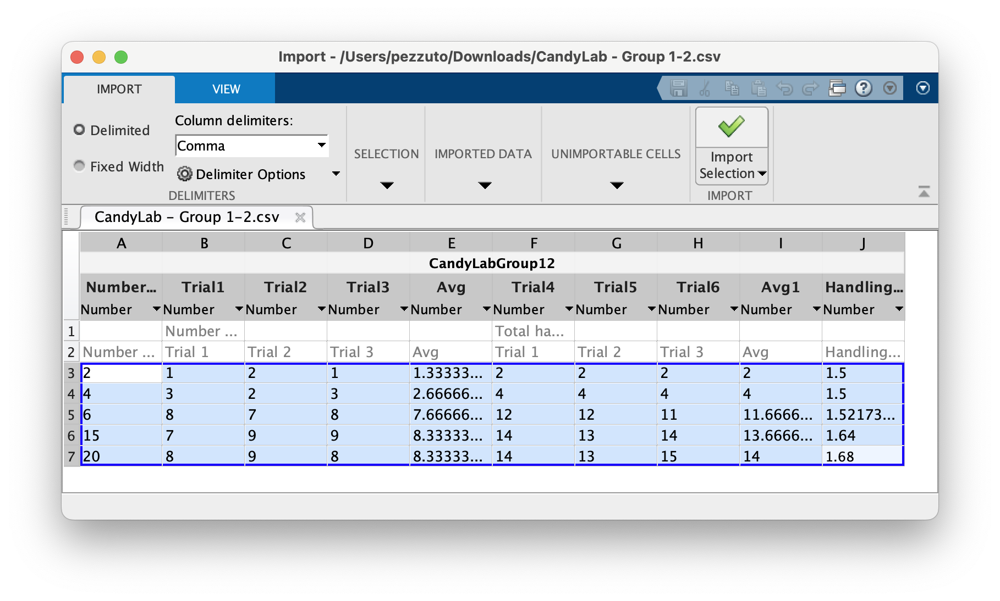

Lab 02: Predation
Holling type predation
Holling type functional responses can be experimentally observed with a simple game. This is inspired to the MSc thesis from Pulley (2020), where the author proposes a similar game with marshmallows.
The experiment
We need the following tools:
- A desk or a clean area where to perform the experiment;
- Two stopwatches (there’s an app in every phone);
- A bag of small objects to be collected or eaten. In the original proposal, they were marshmallow, which can be eaten. If you’re concerned about your diet or teeth, you can use other objects (coins, beans, pens,…)
- A blindfold.
- A group of at least 4 students.

The game is as follows:
- We randomly place on the desk a certain number of objects. We take note of this number \(N\);
- Student A is blindfolded;
- Student B says “Go!” and starts the stopwatch. In the meanwhile, student A starts searching on the desk for an object.
- When Student A finds one object, he will collect/eat it.
- Student C, with another stopwatch, will measure the total time spent eating/collecting. Thus, it starts the stopwatch when student A picks up the object, and stops it when student A starts searching again.
- Student D will put a new object at random on the desk so to keep \(N\) constant.
The experiment can last 90 seconds. At the end of the experiment, we need to mark
- the total number of preys \(N\),
- the total number of preys captured \(C\),
- the total handling time \(T^*\).
To avoid statistical fluctuations, we repeat the experiment 3 times. Data can be collected in a table. You can use the following link to copy the table: CandyLab spreadsheet.

Once done, we compute the handling time \(T_h = \bar{T}^*/\bar{C}\).
The analysis
Suppose that \(T\) is the total experiment time (90 seconds for us). During this time, we spend \(T_s\) in searching for a prey, and \(T_h\) in handling a prey. Thus, we have \[ T = T_s + C T_h, \]
where the total handling time is multiplied by the number of prey captured. The assumption we make is that the total number of captured preys is proportional to the searching time and the total number of prey \(N\). So: \[ C = a N T_s, \]
for some \(a>0\). Substituting \(T_s\) we obtain: \[ C = a N T_s = a N (T - C T_h), \]
that we can solve for \(C/T\), that is the rate of predation (number of prey captured per unit time): \[ \frac{C}{T} = \frac{a N}{1 + a T_h N} \]
So, the functional response should be exactly Holling type II.
Import data
Before trying any fitting, we need to import the data into a software. For instance, this can be MATLAB or Python.
Save and download the spreadsheet as csv format.
Use the Import Data button, then select the columns of your spreadsheet. The variables will appear in your workplace.

You can access the variables with CandyLabGroup.NumberOfCandies, for instance. Just type CandyLabGroup to see all variables.
Plot the results.
In Python there is no GUI for importing csv files, but you can use a module:
import csv
import csv
with open('CandyLab - Group 1.csv') as csvfile:
reader = csv.reader(csvfile)
lines = list(reader)
N = [int(l[0]) for l in lines[3:]]
C1 = [int(l[1]) for l in lines[3:]]
C2 = [int(l[2]) for l in lines[3:]]
C3 = [int(l[3]) for l in lines[3:]]Fitting
The objective is to fit the function: \[ \frac{C}{T} = \frac{a N}{1 + a T_h N} \]
Since \(T\) is fixed, we can fit \(C\) versus \(N\) for various values, and find \(a\) and \(T_h\).
There are at least 2 options you can try:
Option 1: Linear fit via Lineweaver–Burk plot
The Lineweaver–Burk plot uses a simple transformation to make the above equation linear. In fact: \[ y = \frac{T}{C} = \frac{1}{a} \frac{1}{N} + \frac{1}{T_h} = \alpha x + \beta. \]
So, the Holling type II relationship is linear with respect to the reciprocal. We can perform a linear regression to find the coefficients (use polyfit).
Option 2: Nonlinear regression
We can approach the problem as follows: find \((a,T_h)\) such that \[ g(a,T_h) := \sum_{i=1}^3 \left( \frac{C}{T_i} - \frac{a N_i}{1 + a T_h N_i} \right)^2 \quad\to\quad\min. \]
This problem can be solved via optimization. In MATLAB, you can use nlinfit function, in Python scipy.optimize.curve_fit.
Otherwise, you can try to use a steepest descrent approach: given an initial guess \((a^{(0)},T_h^{(0)})\), we update with: \[ (a^{(k+1)},T_h^{(k+1)}) = (a^{(k)},T_h^{(k)}) - \eta \nabla g((a^{(k)},T_h^{(k)})), \]
where \(\eta>0\) is the step length or learning rate.